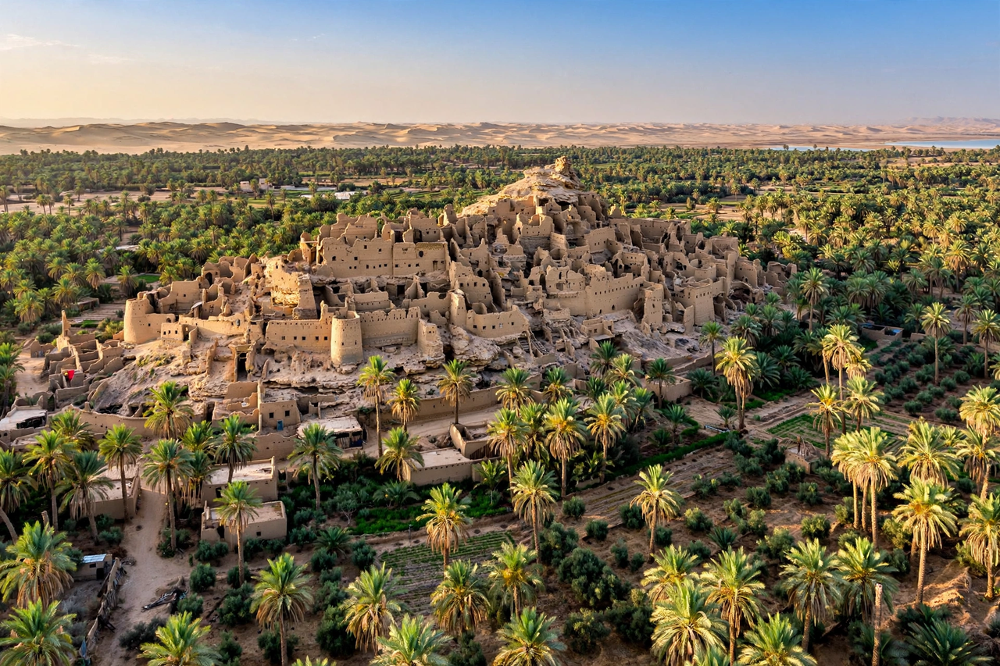

Wikipedia — the free encyclopedia

| Country | Egypt |
| Governorate | Matrouh |
| Population | About 25,000 (approx.) |
| Language | Siwi (Berber) |
The Siwa Oasis is an urban oasis in Egypt's Western Desert, near the Libyan border, about 50 km east of the frontier and 560 km from Cairo. It lies in a depression about 18 m below sea level, with hundreds of thousands of date palms and olive trees fed by natural springs. Its people are Berber and speak Siwi, making Siwa Egypt's only Berber-speaking enclave.
Siwa was famed in antiquity for the Oracle of Amun at the Temple of Amun (Aghurmi), consulted by Alexander the Great in 331 BC, who emerged proclaiming himself son of Zeus-Amun. The ruined mud-brick fortress town of Shali, the Mountain of the Dead tombs, and Cleopatra's Spring are its main sights. Remoteness preserved Siwan customs and jewellery traditions into the modern era.